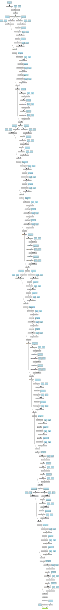

import torch
def pprint(*x):
print()
for i in list(x):
print(i)
print()1 Appendix
class A:
def __init__(self):
self.b = 1A.__dict__mappingproxy({'__module__': '__main__',
'__init__': <function __main__.A.__init__(self)>,
'__dict__': <attribute '__dict__' of 'A' objects>,
'__weakref__': <attribute '__weakref__' of 'A' objects>,
'__doc__': None})help(A)Help on class A in module __main__:
class A(builtins.object)
| Methods defined here:
|
| __init__(self)
| Initialize self. See help(type(self)) for accurate signature.
|
| ----------------------------------------------------------------------
| Data descriptors defined here:
|
| __dict__
| dictionary for instance variables (if defined)
|
| __weakref__
| list of weak references to the object (if defined)
a = A()
a.b1def add_to_class(Class): #@save
def wrapper(obj):
setattr(Class, obj.__name__, obj)
return wrapper@add_to_class(A)
def do(self):
print('Class attribute "b" is', self.b)A.__dict__mappingproxy({'__module__': '__main__',
'__init__': <function __main__.A.__init__(self)>,
'__dict__': <attribute '__dict__' of 'A' objects>,
'__weakref__': <attribute '__weakref__' of 'A' objects>,
'__doc__': None,
'do': <function __main__.do(self)>})class HyperParameters: #@save
def save_hyperparameters(self, ignore=[]):
raise NotImplementedhelp(HyperParameters)Help on class HyperParameters in module __main__:
class HyperParameters(builtins.object)
| Methods defined here:
|
| save_hyperparameters(self, ignore=[])
|
| ----------------------------------------------------------------------
| Data descriptors defined here:
|
| __dict__
| dictionary for instance variables (if defined)
|
| __weakref__
| list of weak references to the object (if defined)
import torch
import torch.nn as nn
import torch.optim as optim
import torch.utils.data as data
import torchvision.models as models
import torchvision.datasets as dset
import torchvision.transforms as transforms
from torch.autograd import Variable
from torchvision.models.vgg import model_urls
from torchviz import make_dot
batch_size = 3
learning_rate =0.0002
epoch = 50
resnet = models.resnet50(pretrained=True)
x = torch.zeros(1, 3, 224, 224, dtype=torch.float, requires_grad=False)
out = resnet(x)
make_dot(out) # plot graph of variable, not of a nn.Module